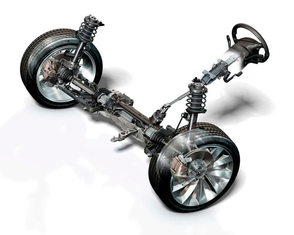

Признаки поломок рулевого управления
Какие же существуют основные признаки поломок, при которых необходим ремонт рулевого управления автомобиля. Во время поворота автомобиля Вы заметили, что руль вращается с заеданиями и с резкими рывками.
При работающем двигателе во время стоянки автомобиля во время вращения рулевого колеса из капота слышен не характерный гул. При движении изменилось в большую сторону усилие, прилагаемое на руль для обеспечения управления автомобилем, слышно странные щелчки во время вращения рулевого колеса. Бывают ситуации, что рулевое колесо в одном направлении вращается легче чем в другом, в народе говорят, руль ведет в ту или иную сторону, это тоже относится к одному из признаков неисправности рулевого управления. Позднее реагирование колес автомобиля на поворот руля в ту или иную сторону, явный признак наличия люфта в рулевом колесе, при этом может появиться его вибрация. Наличие стука в рулевой колонке во время покачивания рулевого колеса в разные стороны при не заведенном двигателе автомобиля. Уровень гидравлической жидкости в бачке гидроусилителя ниже уровня. Здесь указаны самые распространение признаки неисправностей, при которых необходимо срочно проводить ремонт рулевого управления автомобиля.